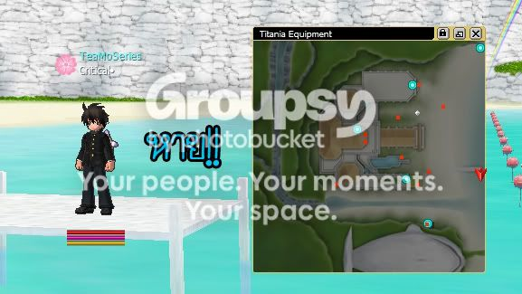

-คนหน้าตาดี- เขียน:เนื้อเรื่อง Emil และ Ruruie [ตามหา Titas]รูปจะลงให้ทีหลังเริ่มเควสที่เมือง West Port โดยให้เราเข้าไปใน Registance Head Office เพื่อคุยกับ NPC : Supply Group
ออกมาข้างนอก คุยกับ NPC : Dr.Einstein
เขาจะขอให้เราช่วย Emil แล้วเราก็จะโดนส่งตัวไปหา Emil ในห้องๆหนึ่ง

ให้เราจัดการกับ Dimension Crawler ให้หมด อย่าให้ต้นเห็ดเป็นอะไร
เมื่อเสร็จแล้วให้คุยกับ Emil แล้วจะถูกส่งตัวออกมา
ให้เราคุยกับ NPC : Dr.Einstein อีกครั้ง
ต่อจากนั้นให้เราไปใน Registance Head Office เพื่อคุยกับ NPC : Supply Group อีกครั้ง
ให้เรามาที่ ECO Town เพื่อมาคุยกับ NPC : Marshall (ชื่อชั่วคราว)
ตำแหน่งดังรูปข้างล่าง
เซิฟยุ่น เซิฟไทย
เซิฟไทย
พอคุยกับลุงคนนี้หลังจากที่ในเซิฟไทยมีแล้วลุงแกหนีไปตรงกลางตลาดในอีโค่ทาวตรงน้ำพุ
คุยเสร็จแกหนีไปในห้องเปลี่ยนเสื้อผ้าชายคุยต่อพบว่าแกแอบดูผู้หญิงอาบน้ำโดยเจาะรู
แล้วพอเราดูที่รูมีให้เลือกดู/ไม่ดูพอเลือกดูมันจะแสดงภาพทั้งจอเป็นผนังแล้วมีช่องอยู่ตรงกลางกาพที่ขึ้นมี2แบบ(ไม่แน่นอนคือไม่เชิงว่ามันจะสลับกันคือภาพลุงแก่ๆแบบในห้องเปลี่ยนเสื้อชายกับภาพตัวละครหญิงในชุดว่ายน้ำโดยบางครั้งถ้าเราไม่เลือกพอแค่นี้มันก็จะค้างต้องลอกเอาท์แล้วเข้าใหม่ที่นี้ก็ไม่รู้ว่าจะไปไหนต่อแล้วหาลุงหื่นกามไม่เจอใครรู้ก็รบกวนตอบทีน่ะจ้ะ
พอกลับไปคุยที่ออฟฟิชโลกโดมิคล้ายๆให้ไปหารูรูเย่โดยจะพูดประมาณว่าเรารู้วิธิการเดินทางไปไททาเนียเวิลด์แล้ว คุบกับ ดร.เขาก็หูหนวกไม่ได้ยินเสียง ขอบคุณจ้า